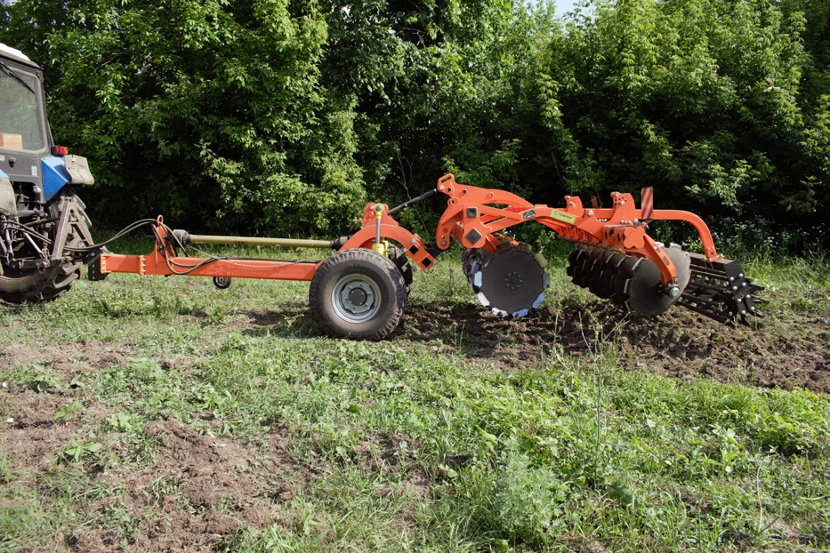

Українське виробництво
Виробник — ФОП Федоренко В.М., м. Біла Церква, Київська область.
TERFED — виробник сільськогосподарських машин, який використовує інноваційні технології у виробництві ґрунтообробної техніки. У каталозі 2026 року — дискові борони ТАУРУС, дискатори БІЗОН, культиватори ВЕПР, шлейфові борони ЗУБР, адаптери та візки.


TERFED — провідний виробник ґрунтообробної техніки на території України та країн Прибалтики, який використовує інноваційні технології у виробництві сільськогосподарських машин.
Місією підприємства є виробництво ґрунтообробної техніки високого технічного рівня на основі нових технологій з метою максимального задоволення потреб споживачів.
Виробник: ФОП Федоренко В.М. Адреса виробництва: вул. Сквирське шосе, 29, м. Біла Церква.
Від компактних навісних агрегатів до широкозахватної причіпної техніки та універсальних візків.
Усі ціни нижче перенесені з буклета TERFED «Комерційна пропозиція» 2026 року. Актуальну вартість, комплектацію та наявність варто підтвердити у менеджера.
За вашим запитом техніку не знайдено.
Оберіть потужність вашого трактора — сайт покаже відповідні товарні лінійки з каталогу TERFED. Для моделей, де в буклеті не вказано діапазон потужності, доступний індивідуальний запит до менеджера.
Ми залишили впізнаваний образ TERFED і додали зручні для покупця інструменти: каталог, фільтрацію, порівняння, підбір за потужністю та швидкий зв’язок.
Виробник — ФОП Федоренко В.М., м. Біла Церква, Київська область.
У каталозі описані цільні та складні рами, гумо- і резино-демпферний захист, котки та робочі органи.
У буклеті TERFED окремо акцентує правильний вибір дискових агрегатів для сухих та важких ґрунтів.
ТАУРУС, БІЗОН, ВЕПР, ЗУБР, АТЛАН, ВУ-3000 та КАРАВАН — товари з каталогу техніки 2026 року.
Тут буде головне відео TERFED із YouTube. Нижче залишено окремий блок для відео, а також прямий перехід на офіційний канал.
Перейти на YouTube-каналЦей блок зроблено навмисно простим: покупець не губиться між десятками пропозицій і швидко переходить до консультації.
Скористайтеся фільтрами, пошуком або підбором за потужністю трактора.
Подивіться характеристики, особливості конструкції та всі ціни модифікацій із буклета.
Додайте до трьох лінійок у порівняння й швидко зіставте ширину, потужність та ціну.
Зателефонуйте або залиште заявку на підбір конкретної комплектації.
Залиште контакти та модель, яка вас цікавить. На статичній версії сайту заявка формує готовий лист на електронну пошту TERFED.
Виробник: ФОП Федоренко В.М. Торгівельна марка (ТМ): «ТЕРФЕД».